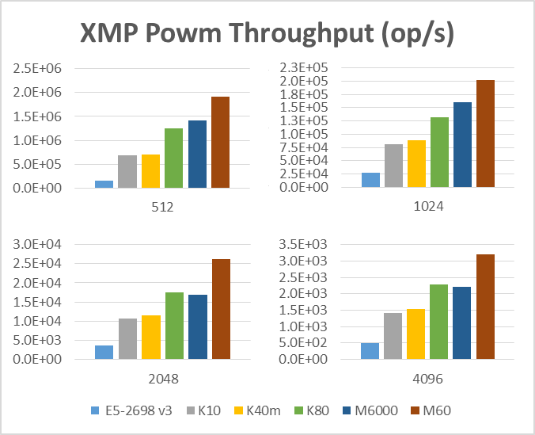
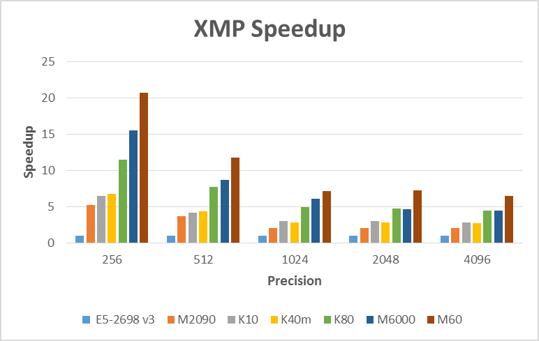

xmp is a CUDA accelerated (X) Multi-Precision library. This library provides a high throughput batched implementations of large unsigned integer operations. The initial implementation focuses on basic math operations including add, subtract, multiply, divide, powm, along with other math and logical operations. For a complete list of supported functions and their APIs please see docs/xmp.docx.
The throughput for modular exponentiation can be seen in the graph below:

In addition the speedup at various sizes over GMP with OpenMP on a Haswell E5-2698 v3 is shown below:
